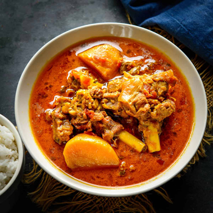
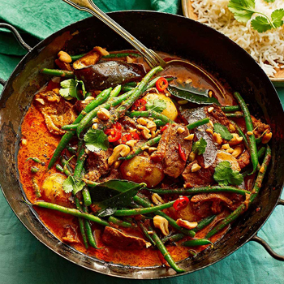
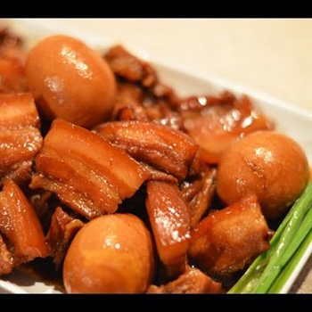
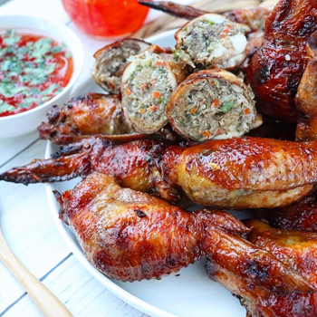
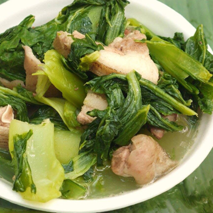
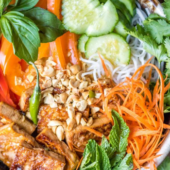
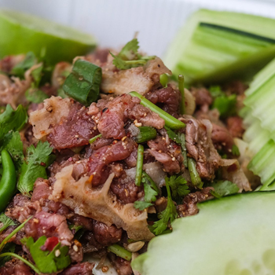
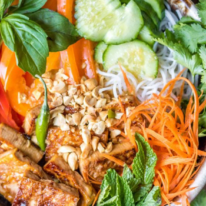
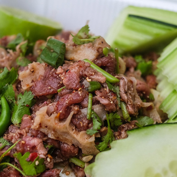

A typical Thai meal includes five main flavors: salty, sweet, sour, bitter, and spicy. Indeed, most Thai dishes are not considered satisfying unless they combine all five. While the seasoning can be spicy for a foreign palate, Thai food ensures that a balance of all flavors is present.
 
Hmong food—typically balanced between heat (usually from hot sauce), neutral rice for sopping up and balancing bold flavors, fresh vegetables, and fatty richness from proteins such as pork or poultry—is one of the state’s great culinary secrets.
  Vietnamese food makes extensive use of fresh herbs, spices, and aromatics. Sometimes they go into a steamy pot of pho, sometimes wrapped into spring rolls, sometimes enclosed with a banh xeo pancake.
 


